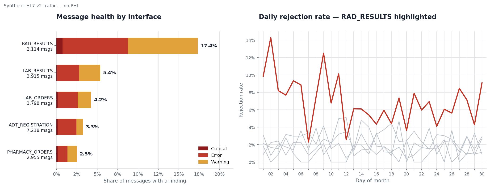

Case study
HL7 v2 Interface Monitor
Parses live-shaped HL7 v2 traffic, validates it against 21 rules, and proves the validator itself works by injecting faults and reconciling every one back.

The problem
An EMR support analyst spends real time on interface failures: an order that never filed, a result that never posted, an admission the downstream system never saw. The message is usually malformed in a specific, boring way — a missing segment, a datetime the receiver cannot parse, a code that is not in the value set.
I wanted hands-on familiarity with that failure surface, so I built the thing that watches it.
How it works
Three parts, each independently useful:
- Parser — HL7 v2 in the standard library only. Segments, fields,
components, repetitions, and the encoding characters declared in
MSH-1/MSH-2rather than assumed. - Generator — realistic
ADT^A01,ADT^A03,ADT^A08,ORM^O01, andORU^R01traffic, with faults deliberately injected at a controlled rate. - Validator — 21 rules over message structure, the MSH header, patient and visit segments, and order and result segments.
Severity is about consequence, not tidiness
The rules do not grade messages on neatness. Each severity maps to what actually happens to the message downstream:
| Severity | What it means | Example |
|---|---|---|
| Rejected | The receiver cannot file this at all | Missing MSH, unparseable message type, no patient identifier |
| Accepted with defect | It files, but something inside it is wrong | Unknown order code, out-of-range observation, malformed datetime in a non-key field |
| Informational | Worth surfacing, not worth paging anyone | Optional segment absent, non-standard but tolerated formatting |
The second row is the one that matters. A rejected message announces itself. A message that files with a defect inside it is the one someone discovers three weeks later in a report that has been quietly wrong the whole time.
Proving the validator works
A validator nobody tested is a validator that quietly passes everything. So there are two independent checks, and the build fails if either does.
Self-test — 173 checks. Every fault the generator can produce is applied to a message that would otherwise be clean, and the suite asserts that the specific expected rule fires — not merely that something fired.
Reconciliation — 1,047 of 1,047. The generator records every fault it injects across 20,000 messages. The validator runs blind. The two ledgers are then compared: every injected fault must be detected, and detections must not exceed injections. Both directions matter — a validator that flags everything would pass the first check and fail the second.
[1/5] Validator self-test 173 passed, 0 failed
[2/5] Generating 20,000 messages 1,047 faults injected
[3/5] Validating
reconciliation: 1,047/1,047 injected faults detected (100.0%) [OK]Honest scope
- Synthetic messages. No PHI, and nothing derived from a real feed.
- Not an integration engine. It parses, validates, and reports — it does not route, transform, or acknowledge.
- The rule set is a working subset, not the full HL7 v2 conformance surface.
- I have not worked on a production interface engine. This is how I got hands on the message structure and the failure modes.